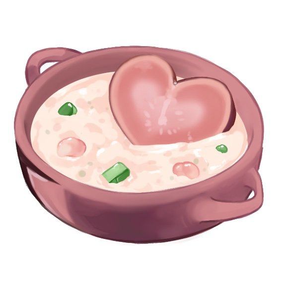

Creamy Heart Soup

This chilled Hydromelon and Radish soup is accurate to The Legend of Zelda: Breath of
the Wild, and is garnished with a heart shaped slice of Voltfruit. According to Ashai from
Gerudo Town, those who master the creation of Creamy Heart Soup are said to be able to
master anything!
Ingredients:
- 1 dragon fruit
- 1 ripe Honeydew Melon
- 2 small baby radishes, halved
- 1 tablespoon granulated sugar (12 g)
- 1 cup plain yogurt, or unsweetened almond yogurt (245 g)
- 1/4 cup coconut milk (60 ml)
- 2 tablespoons honey (30 ml)
- 2 ripe bananas, peeled
- 1 tablespoon fresh beets, finely diced, for color (10 g)
Steps:
- Wash and cut your dragon fruit in half. Cut one half into 1/2 inch slices (1.25
cm), then carefully cut these slices into 2 hearts. On the other half, use the melon
baller to make balls, then put them into a mixing bowl. Set the hearts aside.
- Use the melon baller on the honeydew melon next, you want 8 small melon balls.
Put them into the mixing bowl, and add halved radishes, and sugar. Mix gently, then
set aside.
- Put 2 cups of the remaining ripe melon, yogurt, honey, bananas, and beets into
the blender, and puree until very smooth. The blend should be a light pink; if not,
add a bit more beets and blend again. Pour into two serving bowls. Chill in the refrigerator.
- To serve, retrieve bowls, add an even portion of melon and dragon fruit balls to
each, and garnish with the dragon fruit heart shape. Enjoy!